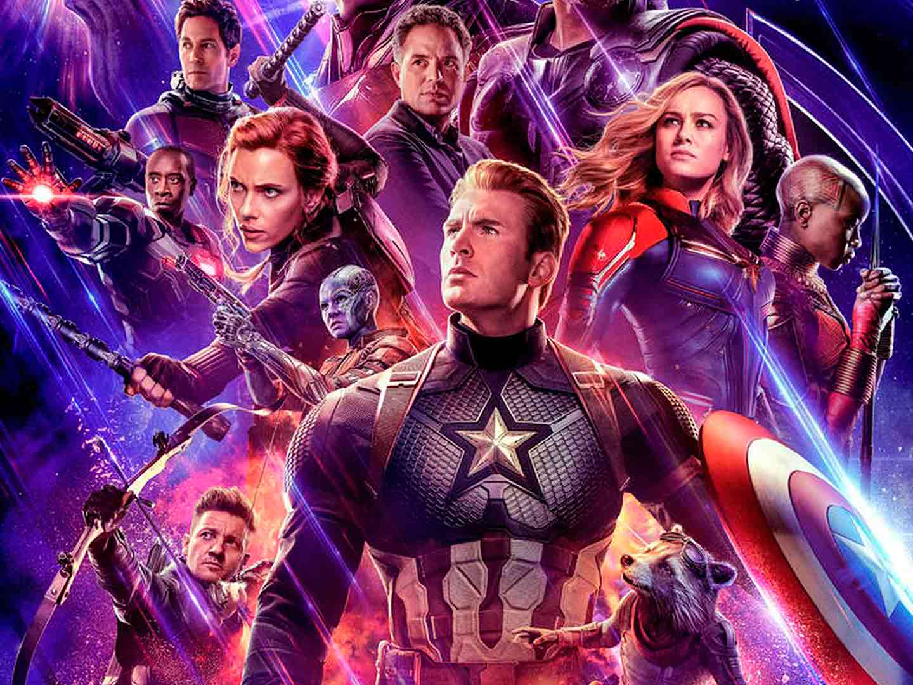

El director de la Agencia SHIELD decide reclutar a un equipo para salvar al mundo de un desastre casi seguro cuando un enemigo inesperado surge como una gran amenaza para la seguridad mundial.

Los Vengadores se reúnen de nuevo y juntan sus fuerzas con las de los recién llegados Quicksilver y Bruja Escarlata para luchar contra un robot maquiavélico llamado Ultrón, el cual Tony Stark creó con el fin de defender la paz, pero resultó defectuoso y ahora pretende exterminar a toda la humanidad.
Los superhéroes se alían para vencer al poderoso Thanos, el peor enemigo al que se han enfrentado. Si Thanos logra reunir las seis gemas del infinito: poder, tiempo, alma, realidad, mente y espacio, nadie podrá detenerlo.

Los Vengadores restantes deben encontrar una manera de recuperar a sus aliados para un enfrentamiento épico con Thanos, el malvado que diezmó el planeta y el universo.
Seis meses después de recibir el escudo de parte del Capitán América al final de Avengers: Endgame, Sam Wilson se une a Bucky Barnes en una aventura alrededor del mundo que pone a prueba sus habilidades y su paciencia.
WandaVision combina el estilo cómico de situaciones clásicas con el Universo Cinematográfico de Marvel Studios en el que Wanda Maximoff y Visión, dos seres superpoderosos que viven su vida suburbana ideal, comienzan a sospechar que no todo es lo que parece.
Loki será una próxima serie de televisión estadounidense creada por Michael Waldron para la plataforma de streaming Disney+, basada en el personaje de Marvel Studios Comics y protagonizada por Tom Hiddleston, Sophia Di Martino y Richard E. Grant.

What If...? es una próxima serie web animada de antología estadounidense creada para Disney+, basada en la serie de Marvel Comics del mismo nombre. Explorará lo que sucedería si los principales momentos de las películas del Universo Cinematográfico de Marvel ocurrieran de manera diferente.